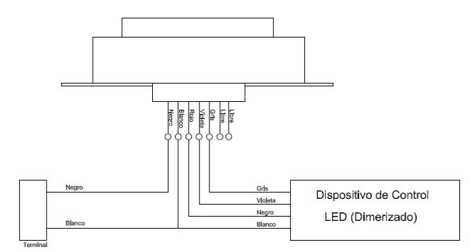

Siempre es más fácil conocer las normas ENEL-CODENSA
Rolex Rolex gold watch, compared with ordinary materials, gold watches are often expensive, but the replica rolex gold watch has the role of swiss replica watches hedging, so that it often becomes the first choice for collectors. The gold watch has value in the world, largely because the omega replica watch brand launched a commemorative limited edition watch or a replica hublot complex movement process or artistic attainments deep watches, mostly preferred gold precious metals such material. These watches tend to have a strong hedging function, therefore, Rolex Rolex gold watch reputation.

ET810-1 Fotocontroles larga vida y bases para alumbrado público
Datos adicionales
Número de especificación
ET 810-1
Fecha de vigencia
11/03/2021
Herramientas adicionales
- Contenido Ocultar
- 1. OBJETO
- 2. ALCANCE
- 3. CONDICIONES DE SERVICIO
- 4. SISTEMA DE UNIDADES
- 5. NORMAS DE FABRICACIÓN Y PRUEBAS
- 6. REQUERIMIENTOS TÉCNICOS PARTICULARES
- 6.1 Características Generales para fotocontroles
- 6.2 Requerimientos de operación.
- 6.3 Receptáculo ó base para el fotocontrol
- 7. CRITERIOS DE ACEPTACIÓN O RECHAZO
- 7.1 Muestreo
- 7.2 Aceptación o Rechazo
- 8. PRUEBAS
- 8.1 Ensayos para el dispositivo de fotocontrol
- 8.2 Ensayos para las bases externas
- 9. MARCACIÓN Y EMPAQUE
- 9.1 Marcación
- 9.2 Empaque
- 10. REQUISITOS DE LAS OFERTAS
- 11. GARANTÍA DE FÁBRICA
- 12. INSPECCIÓN EN FÁBRICA
- 13. CERTIFICACIONES
- 14. PRESENTACIÓN DE LAS OFERTAS
1. OBJETO
Establecer las condiciones que deben satisfacer los fotocontroles de tipo electrónico "larga vida" y el receptáculo o base para fotocontrol, los cuales deben poseer excelentes características técnicas de desempeño, durabilidad y calidad; estos elementos son utilizados en el sistema de alumbrado público.2. ALCANCE
La presente especificación se aplicará en todos los fotocontroles electrónicos "larga vida" y receptáculos o bases para fotocontrol de Alumbrado Público que adquiera CODENSA S.A.3. CONDICIONES DE SERVICIO
Los fotocontroles y sus bases son utilizados para la conexión y desconexión de fuentes de luz, ya sea en forma individual o efectuando un control múltiple mediante la utilización de un contactor. Para control individual el fotocontrol tendrá contactos normalmente cerrados N.C. para los modos de falla (Fail On); para control múltiple siempre se utilizarán contactos normalmente abiertos N.A.Estos elementos se instalaran en el sistema de Alumbrado Público (de las áreas de concesión de CODENSA S.A. E.S.P), bajo las siguientes condiciones:
| CARACTERÍSTICAS AMBIENTALES | |
| a. Altura sobre el nivel del mar | 2 640 m |
| b. Ambiente | Tropical |
| c. Humedad | Mayor al 90 % |
| d. Temperatura máxima y mínima | 45 ºC y - 5 ºC respectivamente. |
| e. Temperatura promedio | 14 ºC. |
| f. Instalación | A la intemperie |
| CARACTERÍSTICAS ELÉCTRICAS | |
| a. Tensión Nominal del sistema | |
| Línea – Línea | 208, 240 V |
| Línea – Neutro | 220, 277 V |
| b. Frecuencia del sistema | 60 Hz |
4. SISTEMA DE UNIDADES
Todos los documentos técnicos, deben expresar las cantidades numéricas en unidades del sistema Internacional (S.I). Si se utilizan catálogos, folletos o planos, en sistemas diferentes de unidades, deben hacerse las conversiones respectivas.5. NORMAS DE FABRICACIÓN Y PRUEBAS
| NORMA | DESCRIPCIÓN | |
| NTC | 900 | Reglas generales y especificaciones para el alumbrado público |
| NTC | 1000 | Sistema Internacional de Unidades. |
| NTC-ISO | 2859-1 | "Procedimientos de muestreo para inspección por atributos. Parte 1: Planes de muestreo determinados por el nivel aceptable de calidad para inspección lote a lote". |
| NTC | 2470 | Dispositivos de fotocontrol intercambiables para iluminación pública |
| NTC | 3279 | Grados de protección dado por encerramiento de equipo eléctrico |
| NTC | 3547 | Electrotecnia. Controles para Sistemas de Iluminación Exterior |
| NTC | ISO 17025:2005 | Requisitos Generales para la Competencia de los Laboratorios de Ensayo y Calibración |
| ANSI/IEEE | STD 428 | Thyristor AC power controllers, definitions and requirements |
| ANSI | C136-10 | For roadway and area lighting equipment - locking – type Photocontrol devices and mating receptacle physical and electrical interchangeability and testing |
| ANSI | C136.41 | Roadway and Area Lighting Equipment – Dimming Control between and external Locking Type Photocontrol and Ballast or Driver |
| ANSI | C136.2 | Roadway and Area Lighting Equipment – Dielectric Withstand and Electrical Transient Immunity Requirements |
Las normas citadas en la presente especificación (o cualquier otra que llegare a ser aceptada por CODENSA S.A ESP) se refieren a su última revisión.
6. REQUERIMIENTOS TÉCNICOS PARTICULARES
6.1 Características Generales para fotocontroles
Los fotocontroles electrónicos requeridos por CODENSA S.A. deben cumplir con las siguientes condiciones:- Tener un índice de hermeticidad IP >= 65 y un IK >= 08.
- Tener un nivel de inflamabilidad conforme UL94 HB o superior.
- El fotocontrol debe superar las pruebas descritas en ANSI C136.10-última versión en cuanto a: Impacto a baja temperatura y prueba de temperatura a 90°C en la unión de los pines del fotocontrol y los pines del receptáculo.
- Poseer terminales de conexión (Locking Plug Blades) electroplateados, zincados ó estañados, libres de filos y rebabas. Otros materiales deberán ser autorizados por CODENSA S.A.
- Permitir su instalación sobre una base o receptáculo de forma tripolar. (ver apartado 6.3)
- Poseer un adecuado sello o empaque para garantizar la hermeticidad en la unión entre el fotocontrol y el receptáculo.
- Poseer tiempo de retardo (no mayor a 10 segundos), de tal forma que se eviten operaciones erróneas, por incidencia accidental de rayos de luz.
- Poseer protección contra sobretensiones transitorias para un nivel de 10kV/5kA (Combination Wave)(1.2/50us-8/20us). Se aceptan protecciones de sobretensión (DPS) que utilicen varistor de óxido metálico (MOV) y/o diodos zener, para una energía no menor a 510 julios.
- El fabricante debe demostrar cumplimiento del MOV para 10kV-5KA conforme prueba de ANSI C136.10 de 2017 y certificación UL1449 del componente o pruebas de laboratorio acreditado.
- Cumplir con una Rigidez Dieléctrica para equipos clasificados 600Vac (conforme ANSI C136.2).
- Estar de acuerdo con el último diseño del fabricante y ser apto para instalarse en el sistema de alumbrado público.
- Para Fotocontroles "larga vida" o "Long Life", bajo condiciones normales de funcionamiento, el número de operaciones de los contactos debe sobre pasar las 10 000 operaciones con luminaria tipo LED, siendo un ciclo completo conexión y desconexión. Se deben cumplir los criterios de prueba dados en ANSI C136.10 última versión.
- 1000W carga incandescente (>=7,300 operaciones).
- 1800VA carga inductiva con factor de potencia 0.4 a 0.6 (>=7,300 operaciones).
- Carga Capacitiva 28uF a 208V (>=7,300 operaciones)..
- Carga Electrónica: Luminaria LED para mínimo 2Arms (>=10,000 operaciones).
- Las partes plásticas, que ofrecen protección para las condiciones ambientales, deben cumplir con los requerimientos dados en la norma ANSI C136.10 en cuanto a “Weathering Test” y “Salt Spray (Fog) Test”.
- No presentar problemas de contaminación ambiental a la hora de deshacerse de estos dispositivos.
- El circuito de control del elemento deberá ser del tipo electrónico y el elemento sensor de luz, deberá ser del tipo silicón con filtro.
- El consumo de energía máximo del fotocontrol deberá ser de 1,5 W para cualquier tensión de conexión del fotocontrol (se debe tener en cuenta el apartado 3 de la presente especificación).
- No poseer dispositivos del tipo térmico para el manejo de la carga.
6.2 Requerimientos de operación.
6.2.1 Dispositivo de controlEl fotocontrol "larga vida" deberá ser del tipo electrónico, conectando la carga en el nivel de iluminación de 5 a 12 luxes, y desconexión con 25 luxes o más. Se aceptan variaciones no mayores al 20 %.
El dispositivo debe energizarse con una tensión en el circuito de mando, igual al valor superior del intervalo de tensión y una temperatura ambiente de 65°C sin presentar alteración en sus características.
El fotosensor del elemento debe ser calibrado en fábrica para que la corriente que acciona el contacto de carga, lo haga de acuerdo a los niveles de iluminancia estipulados.
Se requiere que el fotocontrol tenga tiempo de retardo, de tal forma que se evite el accionamiento del fotocontrol por incidencia accidental de rayos de luz sobre el sensor.
El ajuste a la sensibilidad del fotocontrol, debe conservarse a través de la vida útil del elemento, de acuerdo con el nivel de conexión y desconexión, exigido por la presente especificación.
Los contactos deben ser de cobre o aleación de cobre con recubrimiento de plata o estaño y soportar una corriente no menor de 15 A fijados rígidamente al chasis. Deben conformar un interruptor unipolar que no presenta posibilidades de cebado de arco o chisporroteo, en todo rango operativo de tensión.
Para fotocontroles “larga vida” con sistema de maniobra a través de Relé DC, el circuito de control del Relé DC debe incluir función de “cruce por cero” a través de microcontrolador u otro. La sincronización de la función de “cruce por cero” debe ser repetitivo, con variación dentro de +/-5 grados eléctricos, para garantizar la eficacia de esta técnica. El fabricante debe suministrar ficha técnica del semiconductor u elemento utilizado para garantizar dicha función.
Para fotocontroles "larga vida" con sistema electrónico de maniobra del fotocontrol, la capacidad de conexión y la duración deben verificarse según la norma ANSI/IEEE std 428.
6.2.2 Características Técnicas
| TENSIÓN NOMINAL(1) [Voltios] | INTERVALO DE TENSIÓN [Voltios] | TIPO DE CONTACTO | UTILIZACIÓN |
| 120 | 105 – 130 | NA | Control Múltiple |
| 208/220/240/277 | 185 – 305 | NC (Fail On) | Control Individual |
| TENSIÓN NOMINAL(1) [Voltios] | INTERVALO DE TENSIÓN [Voltios] | PROTECCIÓN SOBRETENSIÓN [Joules] (3) | TIPO DE FALLA | COLOR DE LA CARCASA |
| 120 | 105 – 130 | 380 (a 320 V) | Fail On | Gris |
| 208/220/240/277 | 185 – 305 | 510 (a 320 V) | Fail On | Marrón o azul |
| 120/208/220/240/277 | 105 – 305 | 510 (a 320 V) | Fail On | Negro |
- La abreviatura NA corresponde a Normalmente Abierto (condición “noche”).
- La abreviatura NC corresponde a Normalmente Cerrado (condición “noche”).
- Rango de temperatura entre -5 °C a 45 °C
- Consumo de energía máxima en 12 horas de operación 1,5W.
- Tiempo de retardo mínimo al apagado 6 segundos (máximo 15 segundos).
- Tiempo de retardo máximo al encendido 3 segundos.
(1) Tensión nominal para la conexión del circuito de mando del dispositivo de fotocontrol.
6.3 Receptáculo ó base para el fotocontrol
El receptáculo deberá ser configurado con los 3 conductores estándar definidos en la ANSI C136.10 más dos adicionales para efectos de control y dimerización de color violeta y gris acorde con lo indicado en el numeral 6.1 de la ANSI C136.41, y dos adicionales sin conectar para efectos de monitoreo y sensores. Ver siguiente figura.
Figura 1. Conexión de receptáculo de fotocontrol
La base podrá desplazarse entre 0° y 350° sobre su eje vertical para permitir la orientación del fotocontrol sin necesidad de utilizar alguna herramienta especial, este procedimiento no debe afectar la hermeticidad de la luminaria.
Debe contar con bloqueo anti-giro o sistema que garantice fijación permanente a la carcasa de la luminaria.
Este receptáculo será de 7 pines, de los cuales 5 pines deben cumplir la conexión anteriormente requerida y los dos pines adicionales serán usados para conexión de sensores u otras aplicaciones externas.
Deben llevar marcadas como mínimo de forma permanente y legible la siguiente información:
• Corriente máxima de operación.
• Nombre del fabricante.
• Identificación de los contactos de conexión.
• Modelo y referencia.
El receptáculo o base debe ser de resina fenólica tipo “baquelita” o de otro material equivalente.
Si la base se instala dentro de la luminaria, ésta se fijará al cuerpo de la luminaria en la parte superior, mediante tornillos de cabeza cónica o pisadora con tornillo central que no sobresalgan a ella y puedan llegar a deteriorar la empaquetadura del fotocontrol.
Los conductores para bases instaladas dentro de la luminaria, deberán ser de cobre flexible 14 AWG, aislamiento para 600 V y clase térmica 105°C para los conductores de potencia (negro-blanco-rojo), y para los cuatro cables de control en 18 AWG, aislamiento para 600 V y clase térmica 105°C.
Cuando CODENSA S.A. requiera bases externas para fotocontrol, las puntas de conexión deberán construirse con conductor de cobre flexible 14 AWG, longitud de 60cm, aislamiento para 600 V y clase térmica 105°C para los conductores de potencia (negro-blanco-rojo), y para los cuatro cables de control en 18 AWG, longitud 60cm, aislamiento para 600 V y clase térmica 105°C.
Los contactos de conexión del receptáculo deberán estar fabricados en material resortado con un recubrimiento de plata o estaño, con un espesor mínimo de 1,5mm, y adecuados para soportar una corriente máxima de 15A.
Deben ser del tipo trinquete y estar configurados y alineados de tal forma que coincidan y ajusten de la mejor manera posible, con los contactos del dispositivo de fotocontrol, garantizando una excelente conexión eléctrica y mecánica.
La base debe soportar entre sus partes conductoras en seco una tensión en valor eficaz de 2500 V, 60 Hz durante 1 minuto.
La base debe tener una resistencia de aislamiento superior a 5 MOhmio con 500 VCC entre sus partes conductoras.
Para todos los casos (bases internas y externas), las puntas de conexión se identificarán por colores así:
- Negro: Fase
- Blanco: Fase común con la carga o para el neutro
- Rojo: Carga
- Violeta: Control (+)
- Gris: Control (-)
7. CRITERIOS DE ACEPTACIÓN O RECHAZO
Para este caso se considerará que existe un lote cuando:- Los materiales de producción pertenecen a un mismo lote de materia prima.
- Los fotocontroles o receptáculos se construyen en iguales lotes de producción.
7.1 Muestreo
El muestreo se realizará con base en los procedimientos y tablas estipuladas en la norma NTC-ISO 2859-1 “Procedimientos de muestreo para Inspección por Atributos. Parte 1: Planes de muestreo determinados por el nivel aceptable de calidad para inspección lote a lote” y se acordará por las partes, previamente a la fecha de la realización de las pruebas y recepción de los bienes.Para el desarrollo de las pruebas es indispensable que los instrumentos involucrados estén calibrados.
7.2 Aceptación o Rechazo
Si el número de elementos defectuosos es menor o igual al correspondiente número de defectuosos (dado en la norma NTC-ISO 2859-1 en la tercera columna de las Tablas 1 y 2), se deberá considerar que el lote cumple con los requisitos técnicos exigidos por CODENSA S.A., pero en caso contrario, el lote se rechazará.TABLA 1. PLAN DE MUESTREO PARA INSPECCIÓN VISUAL Y DIMENSIONAL(NIVEL DE INSPECCIÓN II, NAC = 2,5%) (NORMA NTC-ISO 2859-1 TABLA1 - TABLA 2A)
| TAMAÑO DEL LOTE | TAMAÑO DE LA MUESTRA | NUMERO PERMITIDO DE DEFECTUOSOS | NUMERO DEFECTUOSOS PARA RECHAZO |
| 2 a 8 | A = 2 | 0 | 1 |
| 9 a 15 | B = 3 | 0 | 1 |
| 16 a 25 | C = 5 | 0 | 1 |
| 26 a 50 | D = 8 | 1 | 2 |
| 51 a 90 | E = 13 | 1 | 2 |
| 91 a 150 | F = 20 | 1 | 2 |
| 151 a 280 | G = 32 | 2 | 3 |
| 281 a 500 | H = 50 | 3 | 4 |
| 501 a 1200 | J = 80 | 5 | 6 |
| 1201 a 3200 | K =125 | 7 | 8 |
| 3201 a 10000 | L = 200 | 10 | 11 |
TABLA 2 PLAN DE MUESTREO PARA LOS ENSAYOS MECÁNICOS(NIVEL DE INSPECCIÓN ESPECIAL S-3, NAC = 2,5%) (NORMA NTC-ISO 2859-1 TABLA 1 - TABLA 2A)
| TAMAÑO DEL LOTE | TAMAÑO DE LA MUESTRA | NUMERO PERMITIDO DE DEFECTUOSOS | NUMERO DEFECTUOSOS PARA RECHAZO |
| 2 a 8 | A = 2 | 0 | 1 |
| 9 a 15 | A = 2 | 0 | 1 |
| 16 a 25 | B = 3 | 0 | 1 |
| 26 a 50 | B = 3 | 0 | 1 |
| 51 a 90 | C = 5 | 1 | 2 |
| 91 a 150 | C = 5 | 1 | 2 |
| 151 a 280 | D = 8 | 1 | 2 |
| 281 a 500 | D = 8 | 1 | 2 |
| 501 a 1200 | E = 13 | 1 | 2 |
| 1201 a 3200 | E = 13 | 1 | 2 |
| 3201 a 10000 | F = 20 | 1 | 2 |
Para efectuar cualquier despacho, es requisito indispensable una autorización escrita de CODENSA S.A., la cual será expedida con base en los resultados de las pruebas realizadas en fábrica y/o la aprobación del protocolo de pruebas realizadas por el fabricante a los bienes solicitados.
8. PRUEBAS
En caso que CODENSA S.A considere necesario, el fabricante deberá remitir los prototipos de sus fotocontroles o bases, a un laboratorio reconocido por la Superintendencia de Industria y Comercio o Internacionalmente reconocido para la elaboración de pruebas eléctricas para los fotocontroles.Los materiales solicitados deben cumplir mínimo con los siguientes ensayos:
8.1 Ensayos para el dispositivo de fotocontrol
- Examen visual y mecánico.
- Marcación.
- Operación encendido y apagado (on/off)
- Limites de funcionamiento (luxes)
- Consumo W.
- Verificación documental de la capacidad MOV. y nivel de protección definido en ANSI C136.10.
- Verificación documental del elemento(s) para función “cruce por cero”.
- Prueba de operación a 65°C y 277Vac durante 60 minutos y la operación de prendido, apagado, perdidas e inspección visual del fotocontrol.
- Duración de los contactos con carga LED.
- IP & IK
8.2 Ensayos para las bases externas
- Examen visual y mecánico
- Marcación
- Rigidez dieléctrica
- Resistencia de aislamiento
- Ciclo térmico de los contactos
Y todas aquellas pruebas y ensayos que no estén indicadas en éste numeral pero que se especifiquen en la norma correspondiente.
9. MARCACIÓN Y EMPAQUE
9.1 Marcación
Los fotocontroles deben llevar grabados, en alto relieve ó en marcación impresa mediante tinta indeleble y duradera, la siguiente información:En la tapa superior:
- Identificación del norte
- Sentido de remoción del control
- Marca de fábrica
En la base inferior
- Calendario de fecha de instalación
- Identificación de los contactos de conexión
- Con autoadhesivo:
- Identificación de los contactos de conexión: (NA/NC)
- Condición de operación en caso de falla: “fail on”
- Protección
- Modelo y referencia
- Potencia activa y potencia aparente de la carga
- Rango de tensiones de operación
- Mes y año de fabricación
- Identificación de los contactos
Las bases o receptáculos deben llevar grabadas de forma permanente y legible, mínimo con la siguiente información:
- Corriente máxima de operación
- Nombre del fabricante
- Identificación de los contactos de conexión
- modelo y referencia
Cada uno de los fotocontroles y/o las bases, deben tener grabados la palabra BOG-CUN y el número de orden de compra o contrato, de forma duradera y legible.
9.2 Empaque
Los bienes, objeto de la presente especificación técnica, deben ser empacados en forma individual, adecuadamente para resistir las condiciones de humedad e impacto que pueden presentarse durante el transporte desde fábrica hasta las bodegas de la Compañía y durante su almacenamiento. En dicho empaque, deberá aparecer relacionado el Código SAP en la siguiente forma:| ELEMENTO | CÓDIGO DE ALMACEN-SAP |
| Fotocontrol NA 105-130 V 1000 W 1800 VA | 1000002085 |
| Fotocontrol Standard Life NC 185-305 V 1000W 1800VA (Fail On) | 1000001903 |
| Fotocontrol Long Life NC 105-305 V 1000W 1800VA (Fail On) | Con la licitación se codifica |
| Base fotocontrol montaje independiente | 1000001907 |
10. REQUISITOS DE LAS OFERTAS
El oferente obligatoriamente deberá incluir con su propuesta, la siguiente información:- Planilla de características técnicas garantizadas, la cual deberá ser diligenciada completamente, firmada y sellada por el fabricante.
- Catálogos originales completos y actualizados del fabricante, que correspondan a los bienes cotizados, en la planilla de características técnicas garantizadas.
- Protocolos de pruebas de acuerdo con las normas indicadas en el numeral 5 de la presente especificación. En tales protocolos se deberán anotar las fechas de fabricación y pruebas del equipo, para permitir la verificación de las características técnicas garantizadas.
- Certificaciones del sistema de calidad y de producto con norma técnica y RETILAP.
- Muestras de cada una de las referencias ofertadas sin cargo a devolución, con cada una de las características técnicas, solicitadas y mencionadas en la presente especificación.
- Información adicional que considere aporta explicación a su diseño (dibujos, detalles, características de operación, dimensiones y pesos de los materiales ofertados).
11. GARANTÍA DE FÁBRICA
CODENSA S.A E.S.P requiere como mínimo, un período de garantía de fábrica de setenta y dos (72) meses, a partir de la entrega de los bienes.12. INSPECCIÓN EN FÁBRICA
El suministrador enviará con no menos de quince (15) días calendario de anticipación, a la fecha programada para la realización de las pruebas en fábrica, el formato de protocolos de pruebas y copia de las normas en inglés o castellano utilizadas para tal fin. CODENSA informará por escrito su conformidad con las pruebas requeridas.El Ingeniero responsable de CODENSA S.A. podrá inspeccionar en las instalaciones del proveedor o fabricante y de sus subcontratistas el proceso de fabricación y pruebas, y solicitar la información y ensayos que a su juicio resulten necesarias para verificar el cumplimiento de los requisitos estipulados en este documento. El proveedor debe brindar plena colaboración al responsable en el cumplimiento de sus funciones.
El valor de las pruebas y ensayos debe incluirse en los precios cotizados en la propuesta. CODENSA S.A. se reserva el derecho de descartar las propuestas que no ofrezcan pruebas, o si las ofrecidas son consideradas insuficientes para garantizar la calidad de los fotocontroles.
13. CERTIFICACIONES
El oferente adjuntará con su propuesta, para los productos cotizados, el certificado de conformidad con norma técnica, el certificado de conformidad con RETILAP y el certificado de calidad ISO 9001, expedida por entidades idóneas14. PRESENTACIÓN DE LAS OFERTAS
El oferente deberá presentar su oferta técnica en el siguiente orden:- ANEXO 1: relación de los bienes cotizados.
- ANEXO 2: información del oferente.
- ANEXO 3 y/ó 4: planillas de características técnicas garantizadas. Deberá presentarse en formato Excel.
- EXCEPCIONES TÉCNICAS: apartado en el cual se deben relacionar las excepciones de carácter exclusivamente técnico de la oferta, respecto a los bienes solicitados. Si la oferta no presenta excepción, se indicaría expresamente en el mismo “NO HAY EXCEPCIONES”
- PROTOCOLO DE PRUEBAS: relación de los ensayos realizados al fotocontrol ó base, y sus accesorios según el caso.
- CERTIFICACIONES: certificación del sistema de calidad y acreditación del producto con norma técnica y RETILAP.
- EVIDENCIA TÉCNICA: relación de clientes, evidencia de su capacidad técnica y experiencias relacionadas con los materiales y/o equipos cotizados.
- GARANTÍA: carta de garantía de los bienes cotizados.
- NORMAS: normas técnicas aplicables a los bienes cotizados.
- CATÁLOGOS: catálogos originales completos y actualizados del fabricante, que correspondan a los datos bienes cotizados.
- INFORMACIÓN ADICIONAL: información adicional que se considere aporta explicación al diseño del fotocontrol.
La oferta técnica deberá presentarse en carpeta blanca de tres aros (tipo catálogo), con separadores en el orden anteriormente señalado. Adicionalmente, el fabricante debe incluir la anterior información en formato electrónico.
ANEXO 1. REQUERIMIENTOS FOTOCONTROLES
| ITEM | DESCRIPCION DEL MATERIAL | Fabricante | Referencia | capacidad de carga | CANTIDAD (UNIDADES) | |
| Fotocontrol para alumbrado público | ||||||
| Tensión nominal: | ||||||
| Tipo de contactos: | ||||||
| Tipo de falla: | ||||||
| Base para fotocontrol de alumbrado público | ||||||
ANEXO 2. INFORMACIÓN GENERAL DEL PROPONENTE
| DATOS DEL PROPONENTE | |
| NOMBRE DEL PROPONENTE | |
| DIRECCIÓN | |
| CIUDAD | |
| PAIS | |
| TELÉFONO | |
| FAX | |
| PERSONA DE CONTACTO | |
| La persona de contacto, es la responsable de la oferta técnica a la cual se acudirá en caso de consulta o aclaración. | |
ANEXO 3. PLANILLA DE CARACTERÍSTICAS TÉCNICAS GARANTIZADAS
| CARACTERÍSTICAS TÉCNICAS GARANTIZADAS FOTOCONTROLES | ||||
| ITEM | CARACTERÍSTICA | OFERTADO | ||
| 1 | País de fabricación | |||
| 2 | Fabricante | |||
| 3 | Representante del fabricante | |||
| 4 | Normas para fabricación y ensayos | |||
| 5 | Referencia | |||
| 6 | Tipo de fotocontrol (Describir) Standard Life o Long Life | |||
| 7 | Tipo de instalación (Exterior, Aclarar) | |||
| 8 | Tensión de operación | Nominal [V] | ||
| Intervalo o rango [V] | ||||
| 9 | Frecuencia de operación[Hz] | |||
| 10 | Carga nominal (W/VA) | |||
| 11 | Corriente nominal (carga electrónica LED) [A] | |||
| 12 | Corriente máxima pico en los contactos [A] | |||
| 13 | Capacidad portadora de corriente de los contactos en régimen continuo [A] | |||
| 14 | Hermeticidad del dispositivo de fotocontrol (IP) | |||
| 15 | Nivel de iluminación de operación a tensión nominal [luxes] | Encendido | ||
| Apagado | ||||
| 16 | Contactos del dispositivo de fotocontrol (N.C. ó N.A.) | |||
| 17 | Duración de los contactos del dispositivo de fotocontrol(Carga LED) | |||
| 18 | cruce por cero” a través de microcontrolador u otro-Anexar ficha técnica | |||
| 19 | Tipo de protección contra sobretensiones MOV (Describir)-agregar certificados | |||
| 20 | Tensión máxima de disrupción del dispositivo de protección de sobretensión. | |||
| 21 | Número de contactos | Normalmente abiertos | ||
| Normalmente cerrados | ||||
| 22 | Nivel de aislamiento [V] | |||
| 23 | Tiempo de retardo (segundos) | |||
| 24 | Rango de temperatura[°C] | |||
| 25 | Elementos del dispositivo | Material de la base | ||
| Material de la cubierta | ||||
| Color de la cubierta | ||||
| Posee ventana (Si/No/Aclarar) | ||||
| Material de la ventana | ||||
| 26 | Pérdidas[W] | A tensión y corriente nominales | ||
| A tensión nominal sin carga | ||||
| 27 | Tipo de falla de los contactos (Fail On) | |||
| 28 | Terminales de conexión | Material (Describir) | ||
| Tipo de recubrimiento (Describir) | ||||
| Sus contactos están libres de filos y rebabas (Si/No) | ||||
| 29 | Garantía (meses) | |||
| 30 | Marcación (Si/No/Aclarar) | Con la palabra BOG-CUN | ||
| Con número de Orden de Compra | ||||
| Con tensión nominal | ||||
| Con la carga nominal | ||||
| Con el tipo de contactos | ||||
| 31 | Empaque | En caja (Si/No/Aclarar) | ||
| Número de unidades | ||||
| Dimensiones [mm x mm x mm] | ||||
| Peso unitario [gr] | ||||
| Posee marcación con el código SAP (Si/No) | ||||
| 33 | Certificación de producto con norma técnica | Entidad acreditadora | ||
| Número de acreditación | ||||
| Fecha de aprobación (Día/Mes/Año) | ||||
| Vigencia | ||||
| Adjunta el certificado (Si/No) | ||||
| 33 | Certificación de producto con RETILAP | Entidad acreditadora | ||
| Número de acreditación | ||||
| Fecha de aprobación (Día/Mes/Año) | ||||
| Vigencia | ||||
| Adjunta el certificado (Si/No) | ||||
| 34 | Sistema de calidad ISO 9001 | Entidad acreditadora | ||
| Número de acreditación | ||||
| Fecha de aprobación (Día/Mes/Año) | ||||
| Vigencia | ||||
| Adjunta el certificado (Si/No) | ||||
| 35 | Pruebas | Están incluidas dentro del precio del material (Si/No) | ||
| A realizar en fabrica (Describir) | ||||
| 36 | Desviaciones técnicas relacionadas | |||
---------------------------------------------
Firma del Oferente
ANEXO 4. PLANILLA DE CARACTERÍSTICAS TÉCNICAS GARANTIZADAS
| CARACTERÍSTICAS TÉCNICAS GARANTIZADAS BASES PARA FOTOCONTROL | ||||
| ITEM | CARACTERÍSTICA | OFERTADO | ||
| 1 | Normas de fabricación y ensayos | |||
| 2 | Referencia | |||
| 3 | Garantía [Meses] | |||
| 4 | Contactos | Capacidad [A] | ||
| Material | ||||
| Tipo | ||||
| Tipo de Recubrimiento | ||||
| 5 | Puntas de conexión | Calibre [AWG] | ||
| Aislamiento [V] | ||||
| Temperatura [°C] | ||||
| Cubierta o funda | Tipo | |||
| Posee protección contra rayos solares (Si/No) | ||||
| Longitud [cm] | ||||
| 6 | Tensión de aislamiento de la base [2500V/60Hz/1min] | |||
| 7 | Resistencia de aislamiento= 5 MOhmio con 500 VCC [Entre partes conductoras y tierra] (Si/No) | |||
| 8 | Tipo de instalación | |||
| 9 | Marcación | Tipo de marcación | ||
| Con la palabra BOG-CUN (Si/No) | ||||
| Con número de orden de compra (Si/No) | ||||
| 10 | Certificación de producto | Ente acreditador | ||
| Número de acreditación | ||||
| Fecha de expedición | ||||
| Adjunta el certificado (Si/No) | ||||
| 11 | Sistema de calidad ISO 9001 | Entidad acreditadora | ||
| Número de acreditación | ||||
| Fecha de aprobación (Día/Mes/Año) | ||||
| Vigencia | ||||
| Adjunta el certificado (Si/No) | ||||
| 12 | Pruebas | Están incluidas dentro del precio del material (Si/No) | ||
| A realizar en fabrica (Describir) | ||||
| 13 | Desviaciones técnicas relacionadas | |||
---------------------------------------------
Firma del Oferente